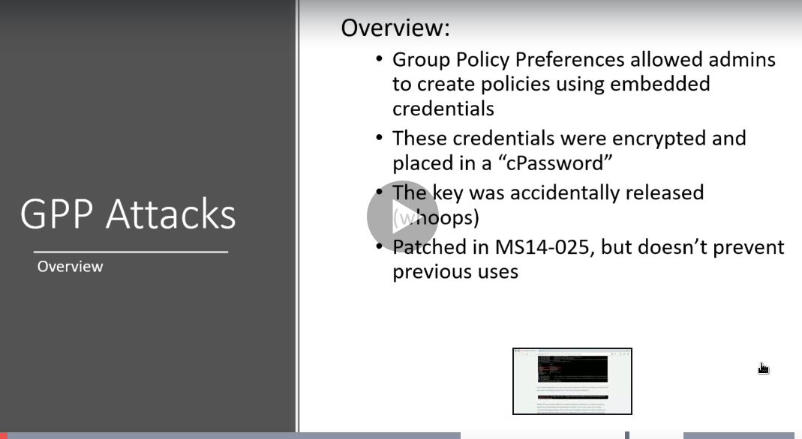

gpp:group policy preferances

xml document was the type of cPassword
if admin has stored gpp before the patch was implemented then this will still display credentails to us
these credentials are domain admin credentails
do check these too for server 2012 machines
imp metasploit module is smb_enum_gpp


imp site:https://blog.rapid7.com/2016/07/27/pentesting-in-the-real-world-group-policy-pwnage/